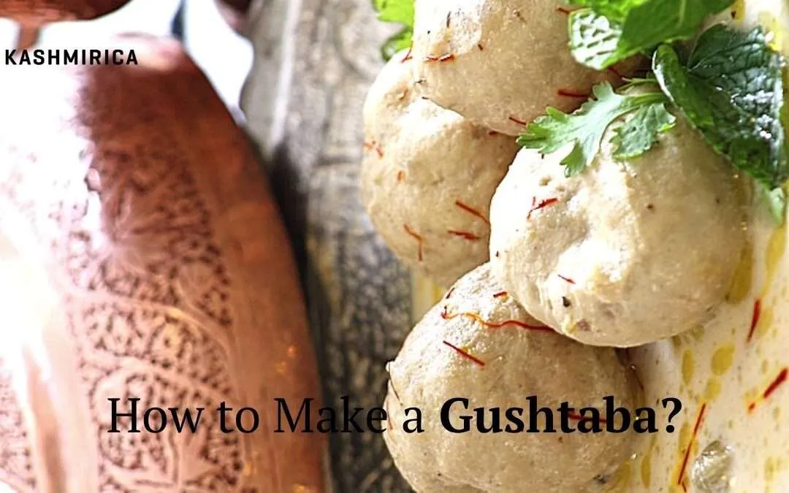

Kashmiri Gushtaba

Description
Just like its culture, heritage, history and nature, Kashmir’s delectable
food is also unmissable. With a majority of the dishes here being
meat-based, Kashmiri cuisine is nothing short of a paradise for all the
non-vegetarians. But that doesn’t mean that there’s nothing for the
vegetarians.
And when we are talking about Kashmir’s grand gastronomic affair, how can
we not talk about the Gushtaba? ‘Gushtaba’ or gostaba is a flavorsome dish
made from minced mutton meatballs in a curd-based gravy. This traditional
dish is full of authentic Kashmiri flavors. It is so good that it’ll leave
you wanting for more.
Ingredients:
For the meatballs:
- 500 grams minced mutton
- 100 grams mutton fat OR 1 egg
- 1 small piece of ginger OR dry ginger powder
- 2 green cardamoms finely crushed
- Salt to taste
For cooking the meatballs:
- 1-2 bay leaves
- 1 inch cinnamon stick
- 2-3 cloves
- 2 cups water
- ½ teaspoon salt
For the Gushtaba gravy:
- 1 ½ cup curd
- 2 medium sized finely chopped onions
- 1 teaspoon Fennel powder
- 1 teaspoon Dry ginger powder
- 1-2 black cardamoms
- 3-4 green cardamoms
- Ghee (clarified butter) – 2 tablespoons
- Salt- as per taste
Steps:
-
First, we need to ensure that the mutton is very finely minced. For
this, you can either use a stone pestle or even a mixer grinder works
fine. Add the minced mutton to the grinder/ food processor and grind it
for about 2 minutes. Then add the salt, ginger, crushed cardamom and
either mutton fat or egg (whichever one you are using) and grind this
for about 2 more minutes.
-
Now, take the finely minced mutton and transfer it to a bowl. Keep it
aside for some time while we prepare the other things.
-
Take a large vessel and add 2 cups of water to it and heat it on a
medium flame. Add salt and all the whole spices (bay leaf, cinnamon,
cloves) to it. Let the water boil.
-
As the water is boiling, take the mutton paste and start making
medium-sized balls out of it. Use a little water to wet your hands for
making the meatballs.
-
After you have shaped all the meatballs, add them to the boiling water
to cook them. Cook these balls in the water for a good amount of time or
till they become a little tender. It should take about 10 to 15 minutes
for the meatballs to cook well.
-
While the meatballs are cooking, heat sufficient oil in a kadhai. Now,
add the finely chopped onions to the oil. Cook these onions till they
become slightly brown. Let the onions cool down.
-
Meanwhile, take the 1.5 cups curd and whisk it very well. Use a little
water if needed. Add a little salt to it while whisking. Now, open the
green and black cardamoms and add its seeds to the curd. Also add the
dry ginger powder and fennel powder and mix well. Keet the curd aside.
-
The onions would have cooled by now. Put these onions in a mixer grinder
and make a very fine paste of it.
-
To make the gushtaba, take a heavy bottomed pan or vessel. Now, add the
prepared curd to this and cook it very well until it starts boiling.
But, you also need to be very careful when cooking the curd and keep
stirring it continuously.
-
Now, add the onion paste to the curd and mix well. Also add the two
tablespoons ghee to it and keep cooking it.
-
When the curry appears to be well cooked, add the meatballs to it. You
can also add the water that the meatballs were boiled in to adjust the
consistency. This is not just to adjust the consistency but it will also
add a good taste to the curry.
- Let everything cook well for a while till it starts to boil.
- Voila, you are done! Your Kashmiri Gushtaba is ready to serve.
-
Optionally, you can garnish it with some fresh or dried mint leaves.
-
Serve the hot gostaba with some steamed rice or naan/ some other bread.
Indulge in and enjoy!